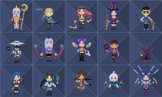
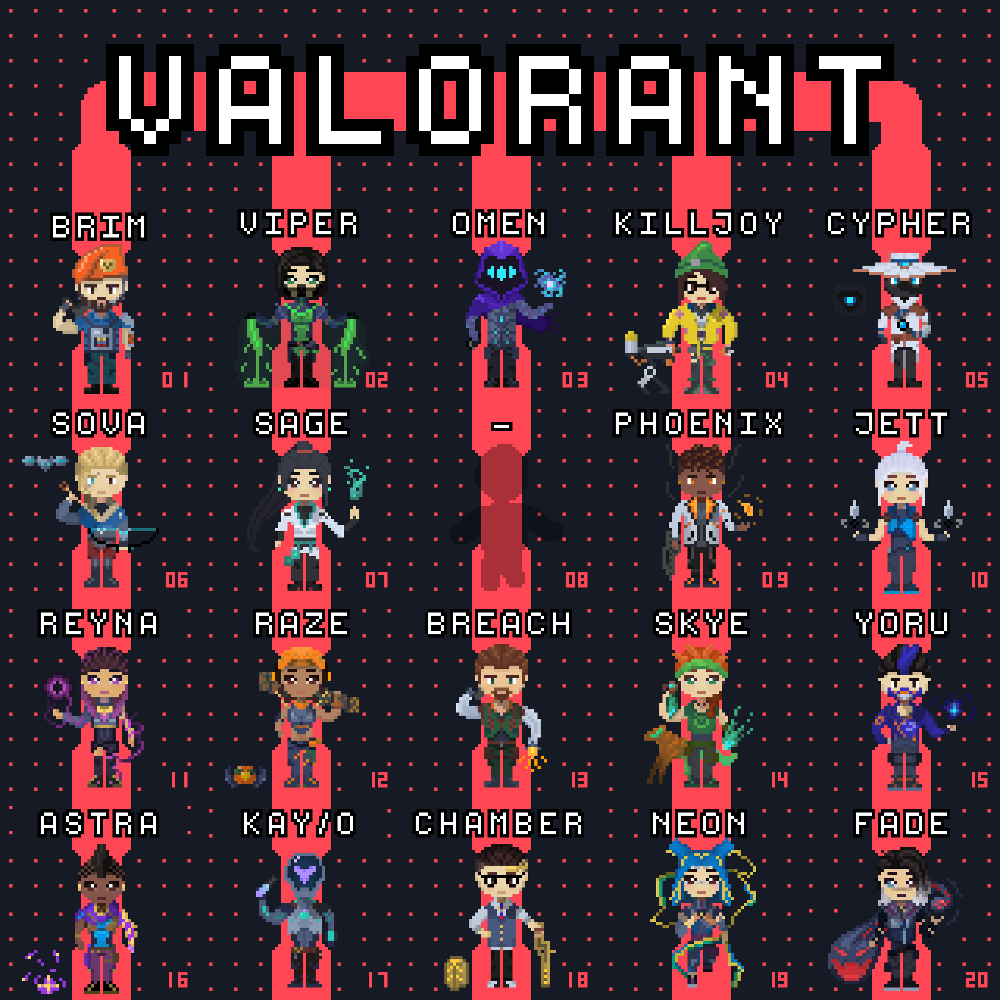

Virst

This is a 2 in 1 python script for insta-locking agents in Valorant or having an automated option for the pick/banning-phase in League of Legends.
How does it work?
Before: It check if Valorant or League of Legends is open, then start the according function in the script.
Valorant
The script is able to detect if the agent-pick-phase is active and can then click on the preselected agent.
It recognize the pick-phase, by checking the color of one pixel (in the top-left corner of the screen). The coordinates of every Agent are predefined manually and have to be changed after unlocking an agent or a new agent comes to the game. note: this can of course be automated too, if you put in a little more effort than me. Simple right?

League of Legends
For this game the script has to do more, because there are many steps involved to get through the selecting then banning then picking phase.
-
The bot searches for the picture of the accept button and clicks it. This step is constantly repeating, because you never know if someone dodges.
-
Now the selecting phase starts and the bot goes to the search bar and writes whatever champion you have selected, if you get the role you picked; if not, the bot will take a predefined champion for your new role.
-
After the selecting phase is over, the banning phase will begin. With it the bot will ban a predefined champion (again through the search bar).
-
This is an in between step and will only start, if the champion you want to ban is already banned or chosen by your team mate. In this step it will just repeat step 3 and ban another predefined champion.
-
It would now select some good standard runes and summoner spells, but with a new update the rune system was improved. So this step is not necessary anymore, but is still in the bot.
Optional
Now on top I also combined the digital functionality with an analog rotary knob through Arduino. If you click this knob, a menu will appear. Now I can rotate the knob to 1. select my role 2. select the champion in the role.
Why did I create Virst?
Do you know the feeling, that you are waiting ages in a pick-screen and you want to do something else meanwhile, like eating or going to the bathroom? Virst is the solution. I’m someone who wants to be as efficient as possible in anything and knows how to use Arduino and Python. So it wasn’t hard creating this simple script. In addition to that, I already made a script similar to this (school-automation).
How useful is it actually?
In Valorant it is saving about 1-3 minutes and gives me almost always the desired agent I want to play. Almost, because someone could also have a picking bot and faster loading times. The time I save in League of Legends ranges from 4-15 minutes, what is huge. The picking- and banning-phase in League of Legends is, in my opinion, way too long. I won’t always get the champion I want, but my script is smart enough to adapt and pick something else.
Can anyone create “Vrist” themselves?
Yes, programming seems to be very hard, but this is one of the perfect starting projects you can do with no real programming experience. In school you might learn some theoretical stuff, but here you make something useful and learn the same stuff on the go. I personally added more stuff, like the Arduino controls, than needed, because I’m not new to programming and wanted to train some electronics.
Download
If you like the artwork and want to use it for yourself, feel free to just contact me anytime.
ATTENTION!!!: This is the source-code and is adapted to MY PC. For personal use, you have to modify my code or use it as a guideline to create your own.
© Made by Purpurax